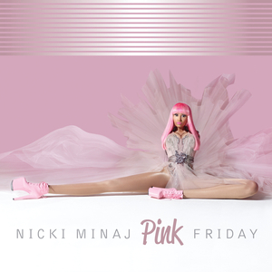
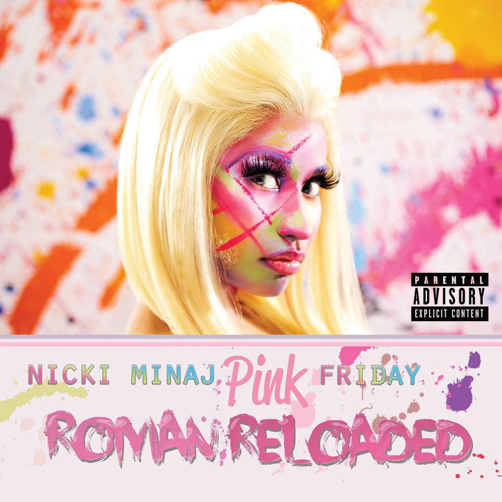
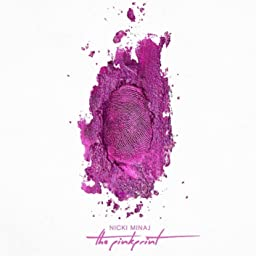

Autobiography
Nicki Minaj (Onika Tanya Maraj-Petty) -was born on December 8, 1982, in the Saint James district of Port of Spain, Trinidad and Tobago. Her father was Robert Maraj (1956–2021), a financial executive and part-time gospel singer of Dougla (Afro-Trinidadian mother and Indo-Trinidadian father) descent. Her mother, Carol Maraj, is also a gospel singer with Afro-Trinidadian ancestry. Carol worked in payroll and accounting departments during Minaj's youth. Minaj's father was addicted to alcohol and crack cocaine and had a violent temper, burning down their house in December 1987. She has an older brother named Jelani, a younger brother named Micaiah, and a younger sister named Ming.
Albums


